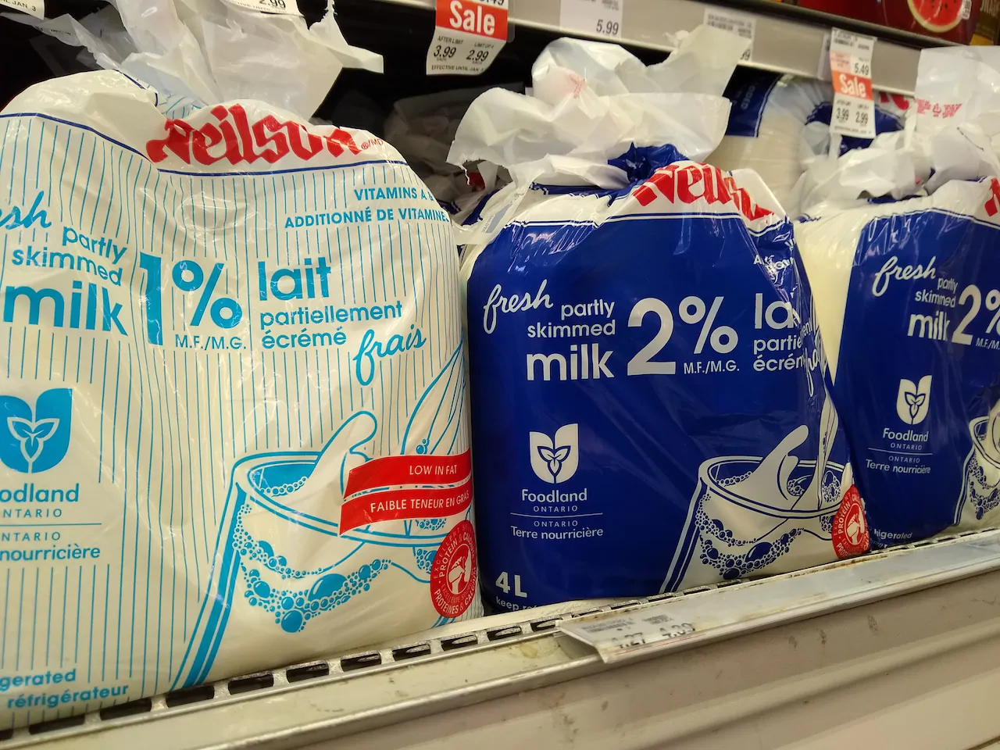
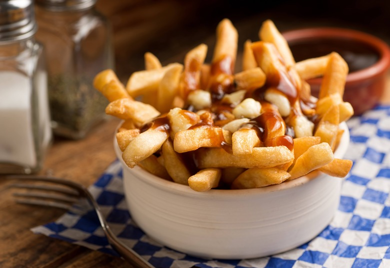
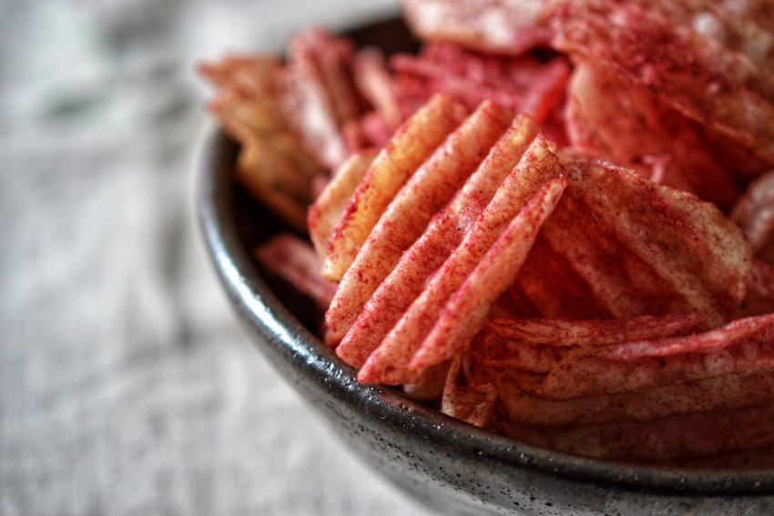

- a guide to vancouver -
Vancouver!
Aka the best place on earth??? Winnie, one of the best students in the universe, was born there, so obviously it's good. Anyways, Welcome to Vancouver, the city that's so rainy, even the fish carry umbrellas! But don't let the weather dampen your spirits, because there's plenty of fun to be had in this beautiful city. From stunning mountain views to world-class sushi, Vancouver has it all. So grab your toque, hop on the SkyTrain, and let's explore Vancouver, eh!
Oh, Vancouver, the land of poutine and sushi fusion. Yes, you heard that right. You can now enjoy your fries, cheese curds, and gravy all rolled up in a sushi roll. It's like a culinary game of "would you rather?" that nobody asked for, but somehow it works. And if that's not your thing, don't worry, there's plenty of other food options to choose from, like smoked salmon bagels, maple-glazed donuts, and of course, the classic Tim Hortons double-double. Just don't forget to bring your stretchy pants, because after all that eating, you'll need them.


